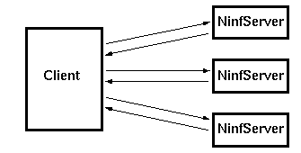

 <center> <H1> Ninf </H1> </center> <hr noshade width = 80% algn = "center"> <H2>


<LI> 計算自身の共有のための枠組
<LI> 数値演算の支援
<LI> サーバ・クライアントモデルによる計算の提供

<DT>例: 行列積
<PRE>
   mmul(N,A,B,C);    
   Ninf_call(&quot;mmul&quot;,N,A,B,C);
</PRE>

 <H1>  特徴  </H1>
<LI> インターフェイス情報を動的に転送 <br>
<center>
	--> IDL記述の共有を必要としない。
</center>

<LI> 転送サイズを式で表現し動的に決定 <br>
<center>
	--> 行列などで便利
</center>
<LI> 数値演算に特化しているため単純 <br>
<center>
	--> IDL記述が容易
<center>

 <hr> <center><table><td><h2>　　　　　　　　　　　　　　　</td><td></td><td></td><td><h2><em>　　　　　　　HOKKE' 96 </td></table></center>


